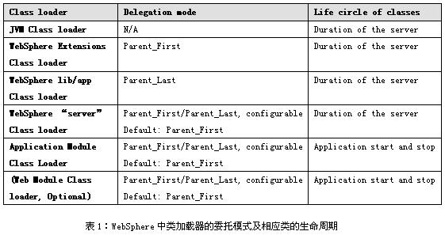

Tomcat和Websphere类加载机制
摘要：分别介绍Tomcat和Webshpher类加载机制。 作者：戴小丹 林晓咏 Tomcat Server在启动的时候将构造一个ClassLoader树，以保证模块的类库是私有的 http://gocom.primeton.com/uploads/FCKUserFiles/Image/1(186).jpg - Bootstrap - 载入JVM自带的类和/jre/lib/ext/*.jar 每个运行中的线程都有一个成员contextClassLoader，用来在运行时动态地载入其它类，系统默认的 contextClassLoader是systemClassLoader，所以一般而言java程序在执行时可以使用JVM自带的类、$ JAVA_HOME/jre/lib/ext/中的类和/中的类，可以使用Thread.currentThread(). setContextClassLoader(...);更改当前线程的contextClassLoader，来改变其载入类的行为ClassLoader被组织成树形，一般的工作原理是： Java应用程序运行时，在class执行和被访问之前，它必须通过类加载器加载使之有效，类加载器是JVM代码的一部分，负责在JVM虚拟机中查找和加载所有的Java 类和本地的lib库。类加载器的不同配置影响到应用程序部署到应用程序服务器上运行时的行为。JVM和WebSphere应用程序服务器提供了多种不同的类加载器配置， 形成一个具有父子关系的分层结构。 WebSphere中类加载器的层次结构图1所示： http://gocom.primeton.com/uploads/FCKUserFiles/Image/1(187).jpg 如上图所示，WebSphere中类加载器被组织成一个自上而下的层次结构，最上层是系统的运行环境JVM，最下层是具体的应用程序，上下层之间形成父子关系。 关于WebSphere的类加载器的层次结构，以下的几点说明可能更有助于进一步的理解类的查找和加载过程： 如果一个类加载器以及它所有的父类加载器都无法找到所需的类，系统就会抛出ClassNotFoundExecption异常或者NoClassDefFoundError的错误。 类加载器的委托模式 类加载器有一个重要的属性：委托模式（Delegation Mode，有时也称为加载方式：Classloader mode）。委托模式决定了类加载器在查找一个类的时候，是先查找类加载器自身指定的类路径还是先查找父类加载器上的类路径。 类加载器的委托模式有两个取值： 有了委托模式的概念，我们可以更加灵活的配置在类加载器的层次结构中类的加载和查找方式。表1中给出了在WebSphere的类加载器层次结构中各个类加载器的委托模式的定义，并给出了不同的类加载器内类的生命周期。  http://gocom.primeton.com/uploads/FCKUserFiles/Image/1(189).jpg 注意：在上表中，"JVM Class loader" 因为在类加载器的最顶层，它没有父类加载器，因此其委托模式为N/A，"WebSphere Extensions Class loader"和"WebSphere lib/app Class loader"的委托模式固定为表中的取值，不可配置，其它的类加载器的委托模式都是可以配置的。
1 基本信息
2 Tomcat类加载机制
Tomcat Server的ClassLoader结构图如下：
- System - 载入/*.class
- Common - 载入/common/...，它们对TOMCAT和所有的WEB APP都可见
- Catalina - 载入/server/...，它们仅对TOMCAT可见，对所有的WEB APP都不可见
- Shared - 载入/shared/...，它们仅对所有WEB APP可见，对TOMCAT不可见（也不必见）
- WebApp - 载入ContextBase?/WEB-INF/...，它们仅对该WEB APP可见
1) 线程需要用到某个类，于是contextClassLoader被请求来载入该类
2) contextClassLoader请求它的父ClassLoader来完成该载入请求
3) 如果父ClassLoader无法载入类，则contextClassLoader试图自己来载入3 Websphere类加载机制